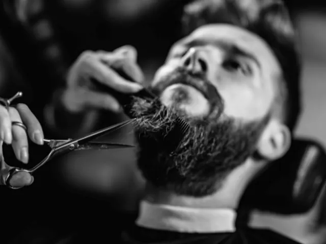

Waar in Nijmegen kunnen mannen terecht voor een stijlvolle look?
Gepubliceerd op 24 augustus 2023, bijgewerkt op 26 februari 2024
Onderdeel van de gids Kappers in Nijmegen

In deze blog nemen we je mee op een avontuurlijke zoektocht naar stijlvolle looks voor mannen in het prachtige Nijmegen. We begrijpen dat je op zoek bent naar een plek waar je je op je gemak voelt en waar de kappers gespecialiseerd zijn in herenkapsels. Gelukkig zijn er in Nijmegen genoeg barbershops die speciaal voor mannen zijn. Hier kun je genieten van hoogwaardige kappersdiensten en tegelijkertijd de stoere, mannelijke sfeer opsnuiven. Klaar voor een stijlvolle transformatie? Let’s go!
First things first, kies voor een barbershop.
Waarom? Omdat je man zijnde een plek verdient waar je je helemaal op je gemak voelt en waar de kappers weten wat ze doen als het om herenkapsels gaat. In Nijmegen heb je geluk, want er zijn verschillende barbershops die precies aan deze criteria voldoen. Een van de hotspots die je niet mag missen is Daggers Barbershop. Hier kun je niet alleen terecht voor professionele kappersdiensten, maar ook genieten van een ontspannen en mannelijke ambiance. De perfecte combinatie!
Maar hoe weet je nu zeker dat je in goede handen bent?
Vraag gewoon even naar de ervaring en expertise van de kappers op het gebied van herenkapsels. Je wilt immers een professional die bekend is met de nieuwste trends en technieken. Een beetje research kan geen kwaad. Duik online in de reviews en aanbevelingen van andere mannen. Ze delen hun eerlijke ervaringen op platforms zoals Google of Facebook. Let vooral op positieve recensies waarin wordt benadrukt dat de kapper uitblinkt in het knippen en stylen van herenkapsels, en dat de service van topkwaliteit is.

Toch nog wat twijfels voor je stijlvolle look? Geen zorgen!
Vraag gerust advies aan vrienden, familie of collega’s. Niets is beter dan aanbevelingen uit eerste hand. Mensen in je omgeving kunnen je inzichten geven op basis van hun eigen ervaringen. En laten we vooral niet vergeten dat je altijd rechtstreeks contact kunt opnemen met de kapperszaken zelf. Stel ze je prangende vragen en vertel ze wat voor look je wilt bereiken. Een goede kapper zal de tijd nemen om naar je wensen te luisteren en je te adviseren over de beste stijl en behandelingen die bij je passen.
Nu wordt het tijd om onze favoriete barbiers uit Nijmegen aan je voor te stellen.
Let’s meet the champions:
Mr. Beard
Hier knippen ze niet alleen goed, maar krijg je ook nog eens waar voor je geld. De eigenaar, Saïd, wordt geprezen als een zeer aardige man. En zeg nou zelf, een gezellig praatje tijdens het knippen is altijd mooi meegenomen.
Noviomagus
De plek waar de kunst van het knippen en scheren tot in de perfectie wordt beoefend. Hier werken jonge barbiers die op de hoogte zijn van de laatste trends en zorgen voor een relaxte setting. Wie je ook kiest, volgens de reviews zijn het allemaal toppers!
Williams and Grey (dames-) en herenkapsalon
Hier ga je niet alleen voor een nieuw kapsel, maar ook voor entertainment. Ze draaien hier leuke muziek in een gezellige huiskamersfeer. En het knippen? Dat doen ze geweldig. Ze luisteren goed naar je wensen en geven je goede adviezen. Een unieke ervaring!
Barber Plein
“De heren van Barberplein behoren tot de beste van Nederland”, aldus een van de reviews. Hier krijg je alle tijd en aandacht die je verdient. Perfectie is hun streven! Je kunt online reserveren of gewoon even binnenlopen. En ook de jonge heertjes worden met een glimlach geknipt, zodat ze net zo’n stoer kapsel hebben als hun papa.
Conclusie?
Nijmegen is the place to be voor mannen die op zoek zijn naar een stijlvolle look. Met de juiste keuze voor een barbershop, de juiste informatie over ervaring met herenkapsels, online reviews en een vleugje advies van vrienden kom je er wel. Ga op zoek naar een kapper die je stijl begrijpt en die hoogwaardige kappersdiensten biedt om die gewenste stijlvolle look te bereiken. You’ve got this, mate!